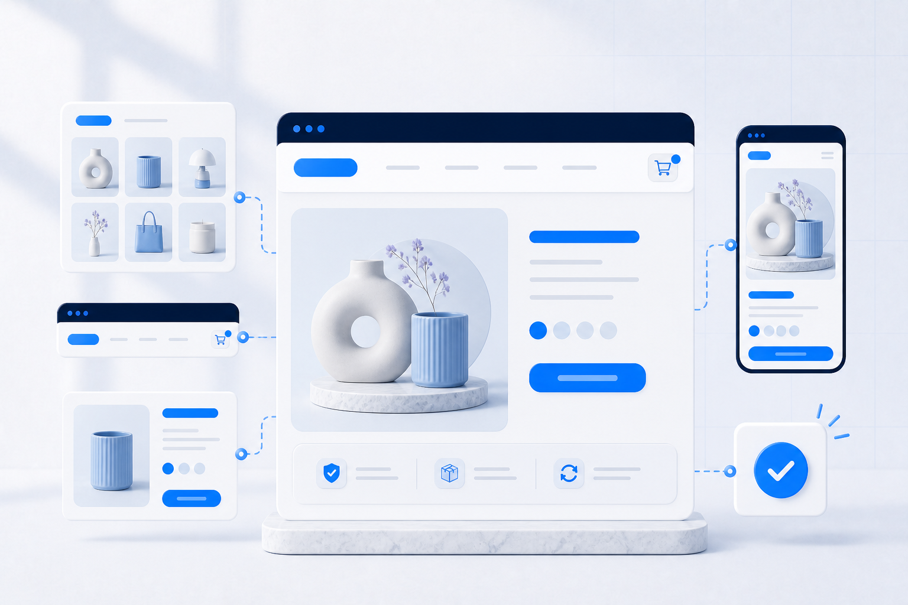

Pasiūlymas suprantamas
Pirmieji puslapio blokai paaiškina, ką parduodate, kam tai skirta ir kuo pasiūlymas skiriasi.
Sutvarkome katalogo logiką, svarbiausius parduotuvės puslapius, Shopify temą, mokėjimus ir pristatymą. Kasdienius pakeitimus galėsite atlikti Shopify administracijoje.

Pirmieji puslapio blokai paaiškina, ką parduodate, kam tai skirta ir kuo pasiūlymas skiriasi.
Kolekcijos, filtrai, variantai, pristatymas ir krepšelis sudėlioti taip, kad pirkėjas lengvai rastų informaciją ir užbaigtų užsakymą.
Produktus, akcijas, tekstus ir daugumą puslapio blokų galėsite keisti be programuotojo.
Atskiras pataisymas nepadės, jeigu pirkėjui neaiškus pasiūlymas arba negalite savarankiškai valdyti turinio.
Turite produktus ir turinį, bet reikia sudėlioti visą Shopify prekybos pagrindą.
Naujiems puslapiams ir akcijoms reikia programuotojo, o apsipirkti telefonu nepatogu.
Kolekcijos, filtrai, variantai ir navigacija nebeatitinka produktų kiekio.
Net tekstų, reklamjuosčių ar puslapio skilčių pakeitimams reikia techninės pagalbos.
Shopify geriausiai tinka tada, kai svarbu greitai ir aiškiai valdyti standartinę internetinę prekybą. Jei projektas kitoks, kryptį verta įvertinti dar prieš kuriant.
Pasiūlyme išvardijame konkrečius puslapius, funkcijas, nustatymus ir patikras.
Navigacija, kolekcijos, puslapiai, produkto informacijos prioritetai ir trūkstamo turinio sąrašas.
Pagrindinis puslapis, kolekcija, produkto puslapis, krepšelis ir svarbiausi jų vaizdai telefone.
Patikimos temos pritaikymas, sutarti individualūs blokai ir administruojami turinio laukai.
Produktai, variantai, kolekcijos, papildomi produktų laukai („metafields“), filtrai ir sutartas importo arba suvedimo būdas.
Pasirinktų mokėjimo ir siuntų tiekėjų nustatymai, tarifai, paštomatai, pranešimai ir bandomi užsakymai.
Domenas, indeksavimo pagrindai, analitika, testų sąrašas, prieigos, instrukcijos ir mokymas.
* Parduotuvės kūrimas savaime neišsprendžia neaiškaus pasiūlymo, neparuošto turinio ar kainodaros. Šiuos klausimus įvardijame prieš pradėdami kurti.
Čia pateikiame atsakymus, kurie svarbiausi prieš pradedant. Daugiau temų rasite visame DUK puslapyje.
Nedideliam projektui dažnai reikia kelių savaičių. Tikslus terminas priklauso nuo turinio paruošimo, katalogo dydžio, dizaino apimties ir integracijų, todėl grafiką patvirtiname įvertinę projektą.
1 490 € yra bazinis orientyras vienai rinkai, katalogui iki 50 tvarkingai paruoštų produktų ir patikimos Shopify temos pritaikymui. Į orientyrą įtraukiame puslapių ir katalogo struktūrą, mokėjimų bei pristatymo nustatymus, testus, paleidimą, perdavimą ir mokymą. Tikslią apimtį ir kainą patvirtiname raštu — daugiau rasite kainų puslapyje.
Taip. Įvertiname produktų duomenų kokybę, variantus ir importo galimybes, tada papildomą katalogo apimtį įtraukiame į pasiūlymą.
Taip. Paruošiame administruojamus turinio ir produkto blokus, perduodame prieigas bei paaiškiname svarbiausius kasdienius veiksmus.
Taip, sukonfigūruojame sutartus bazinius mokėjimo ir pristatymo sprendimus. Sudėtingesnius duomenų mainus su apskaitos, sandėlio ar kitomis sistemomis vertiname kaip atskirą integracijų apimtį.
Jei svarbu išsaugoti produktus, klientus, užsakymų istoriją ir nuorodas, pirmiausia planuojame Shopify migraciją. Jei atnaujinama esama Shopify parduotuvė, įvertiname kūrimo arba temos pertvarkymo apimtį.
30 dienų pagalba po paleidimo yra riboto pirmųjų 3 projektų pasiūlymo dalis. Pasiūlymo sąlygos pateiktos kainų puslapyje.
Vis dar nesate tikri, kuri kryptis jums tinka?Atsakykite į 7 klausimus →